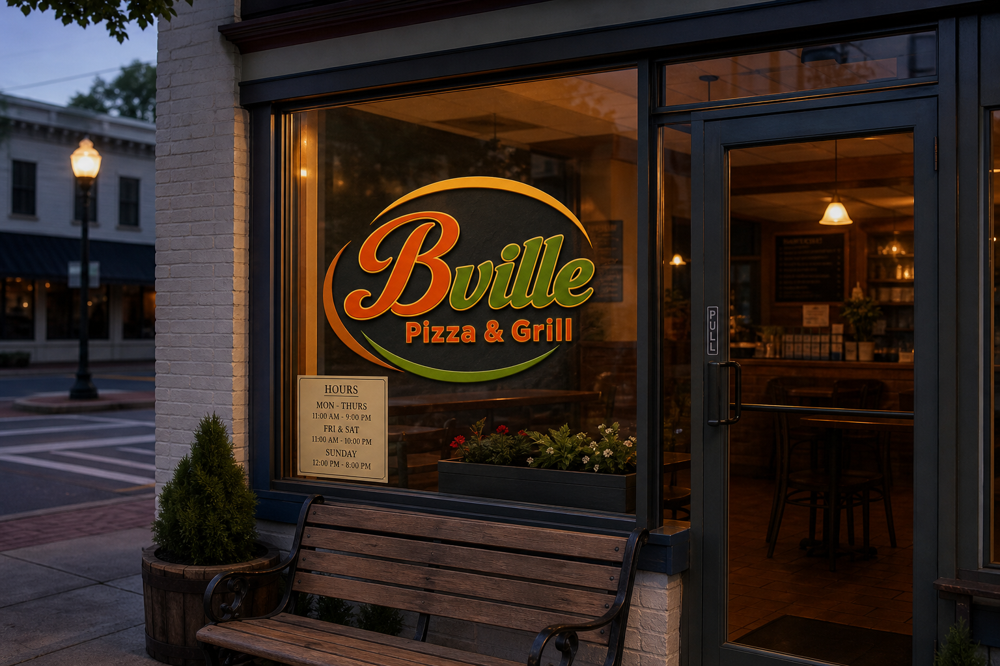
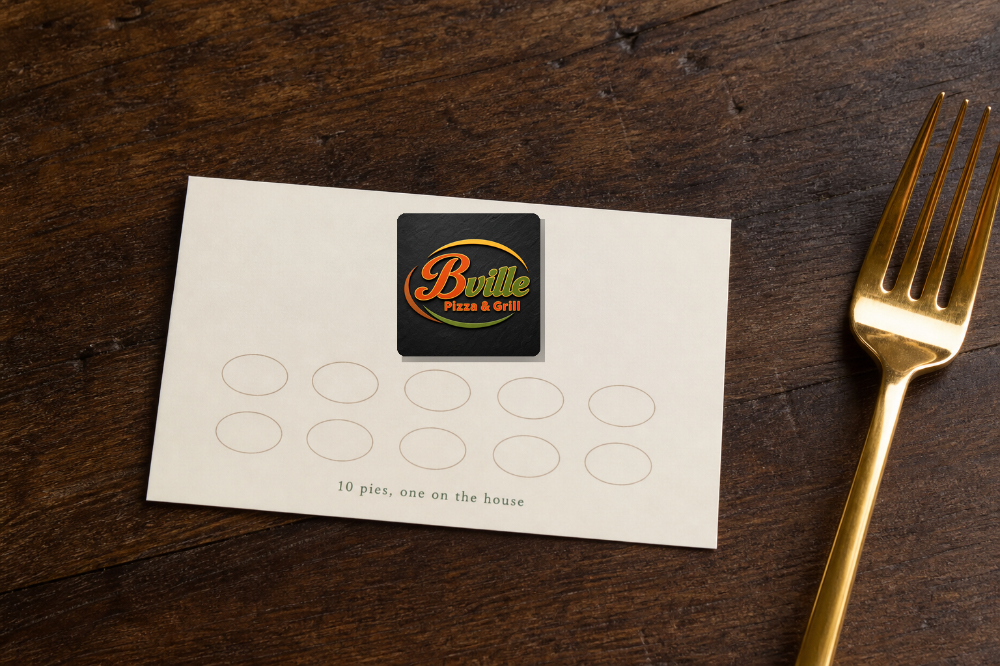
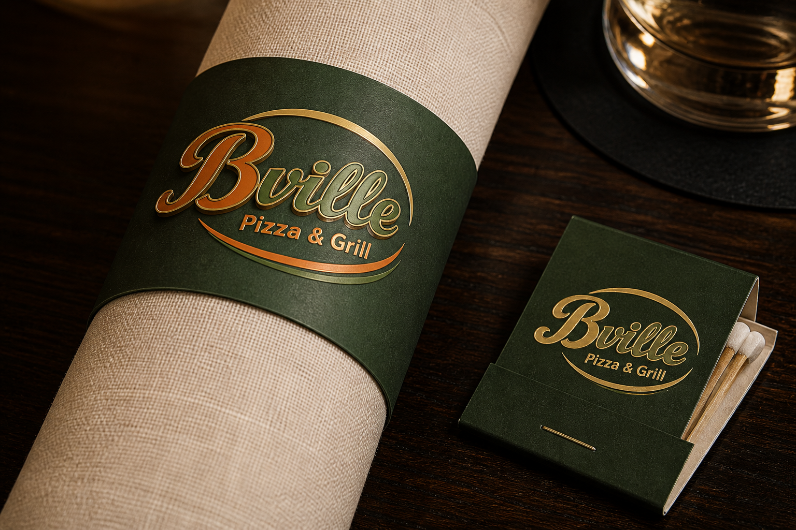
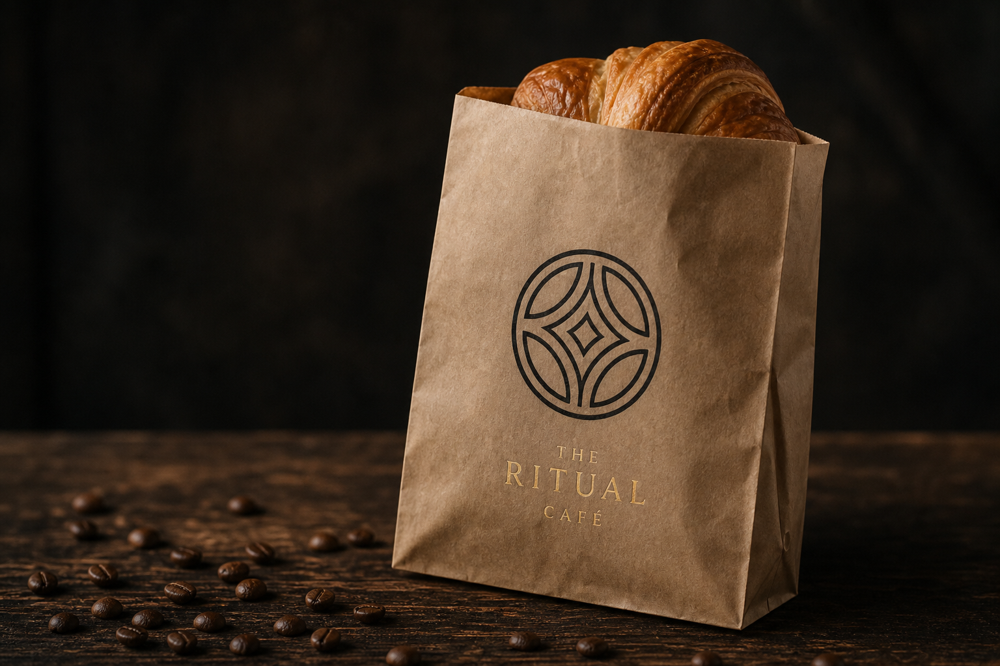
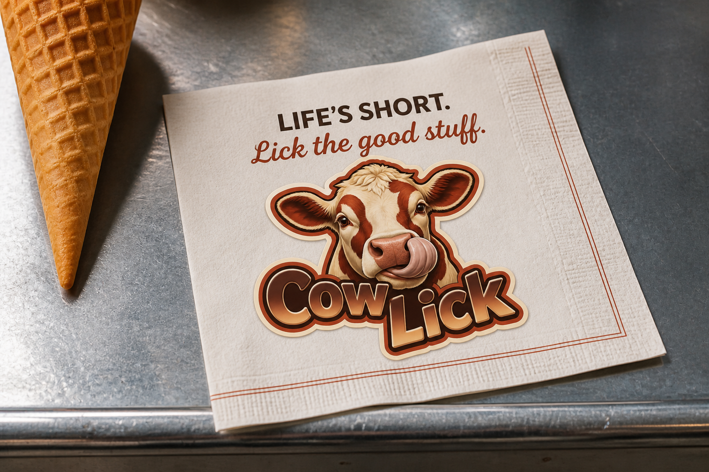
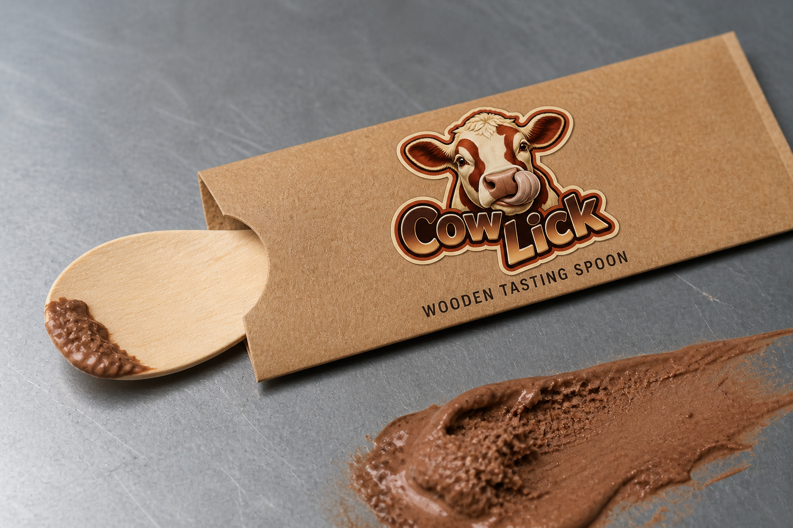
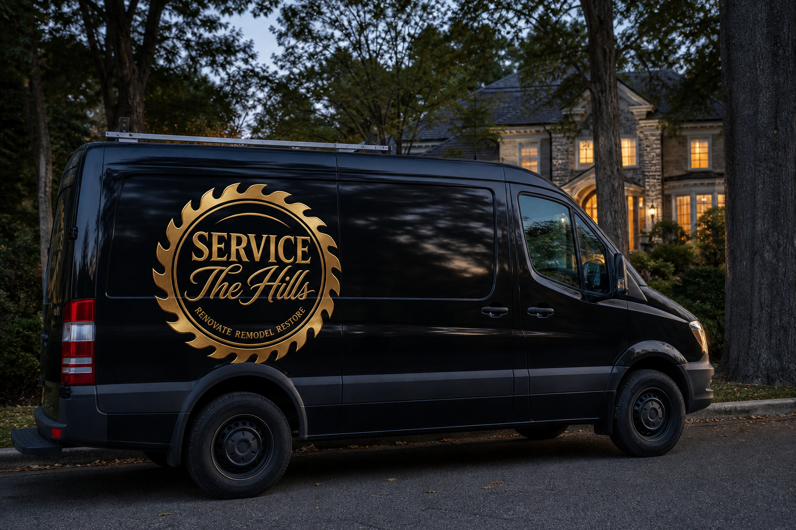
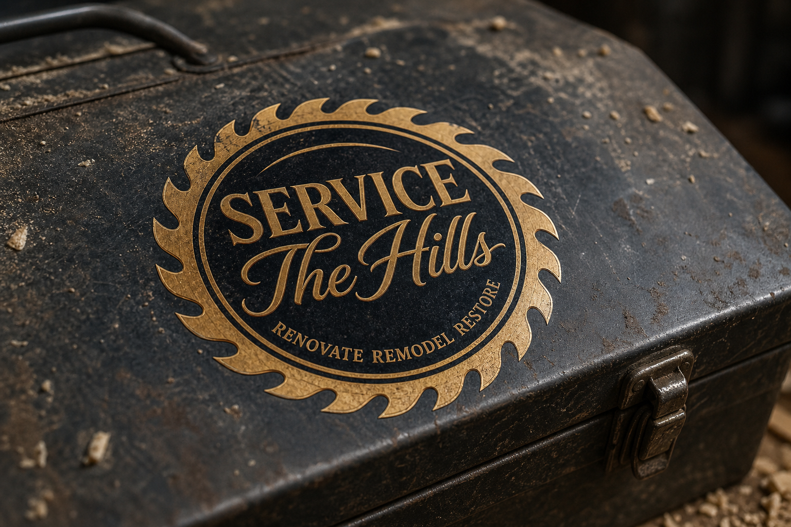

These are studio studies, not live jobs. The marks stay themselves. Print is how they leave the building.
Pattern studies
Fifteen designs from the uploaded marks
Each piece takes a rule already in the logo — the color split, the cup from above, the sticker halo, the saw blade, the B flourish, the gold script — and puts it on something a guest actually holds.
Bville Pizza & Grill
Orange heat, green town, gold as a sign
The uploaded script splits the name on purpose. Orange B is appetite. Green ville is Bernardsville. Gold outline is the physical sign. Swooshes frame it. Print keeps that split.



The Ritual Café
A cup seen from above
The circular mark is geometry for a pause: overlapping arcs, a ring, serif type with air. Black, cream, kraft, gold. Takeaway has to stay the room.

Magic Buds
Sleep, not a circus
Gold script and tiny stars make “magic” approachable. Deep purple is night. High-key white is trust. No leaf. 0 THC is a designed line, not a sticker.
Cow Lick
A joke you can die-cut
The cow licks. The thick cream halo exists so one drawing can live on a pint, a napkin, a freezer door, and a spoon sleeve without being redrawn.



Service The Hills
The tool, not the column
A saw blade in bronze on black. Serif SERVICE is authority. Script The Hills is the place. Hazard orange would look like a franchise.


Bernardsville Deli & Grocery
Warm deli, cool grocery
Stacked type, color-coded: warm gradient for food you eat now, blue for the aisle. The long B flourish is a signature so the town name survives a crumple, a grip, a tote.


Want a system like this?
These studies show how a mark becomes print. If you run a place in Morris County, we can build the same kind of system around your work — not a template with a new logo dropped in.
Start a project